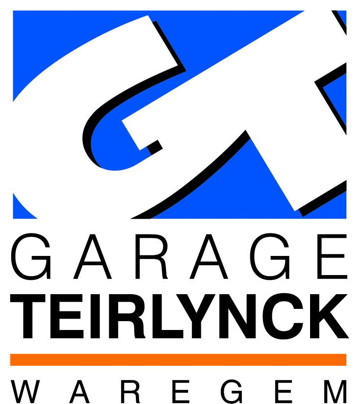
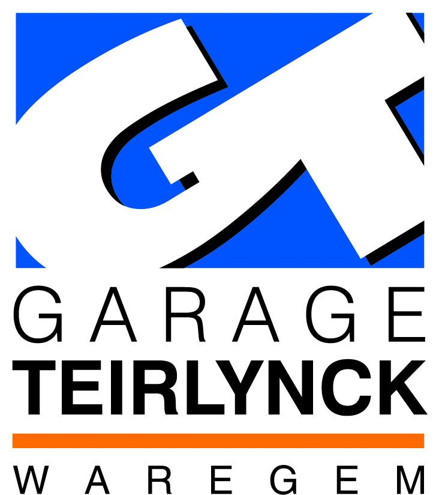

De vrede_bedeel caravan
Recent hebben we een oude caravan aangekocht, die gebruikt zal worden om verscheidene acties mee te doen, zoals kledij, dekens ,soep en voeding te gaan bedelen over het hele land aan de minderbedeelden en daklozen. Daar we de caravan voor verschillende doeleinden zullen gebruiken, zal het interieur ook volledig moeten aangepast worden, zodat deze uit mobiele eenheden bestaan, die gemakkelijk te verplaatsen zijn, volgens het doel dat we uitvoeren. Aangezien we zonder enige subsidie of overheidssteun werken, is elke gift welkom. Het rekeningnummer om ons vrijblijvend te steunen:
Belfius BE42 0636 1795 9854
BIC: GKCC BE BB
Le caravane du paix et de mendier
Récemment, nous avons acheté une vieille caravane, qui sera utilisé pour joindre plusieurs actions, comme les vêtements, des couvertures, de la nourriture et de la soupe à aller mendier dans tout le pays aux plus démunis et sans abri. Nous allons utiliser la caravane à des fins différentes, l'intérieur sera également entièrement personnalisé de sorte qu'il se compose d'unités mobiles, qui sont faciles à déplacer, selon l'objectif que nous effectuons. Puisque nous opérons sans subventions ou des aides d'État, tout don est le bienvenu Le compte pour nous soutenir :.
Belfius BE42 0636 1795 9854
BIC: GKCC BE BB
The peace and handing out caravan
Recently, we bought an old caravan, which will be used to join several actions, such as clothing, blankets, food and soup to go begging all over the country to the less fortunate and homeless. We will use the caravan for different purposes, the interior will also be fully customized so that it consists of mobile units, which are easy to move, according to the objective that we perform. Since we operate without any subsidies or state aid, any donation is welcome The account to support us, feel free to:.
Belfius BE42 0636 1795 9854
BIC: GKCC BE BB
Sponsors
 
